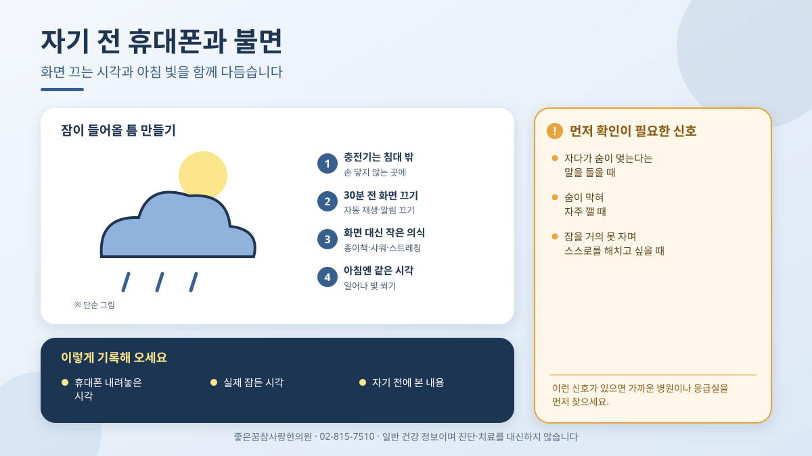

이종호 한의사 감수좋은꿈참사랑한의원 대표원장 (한의사 면허번호 19769)발행 2026-11-26 · 수정 2026-11-26
이 글의 차례
불을 끄고 누웠습니다. 오늘 하루도 길었으니 딱 십 분만 휴대폰을 보고 자려고 합니다. 짧은 영상 하나가 끝나면 다음 영상이 저절로 이어지고, 메신저를 확인하고, 뉴스를 넘기다 보니 어느새 새벽 한 시가 넘었습니다. 화면을 끄고 눈을 감으니 오히려 머리가 말똥말똥합니다.
진료실에서 잠 이야기를 나누다 보면 이 장면을 정말 많이 듣습니다. 잠이 안 와서 휴대폰을 보는 건지, 휴대폰을 봐서 잠이 안 오는 건지 본인도 헷갈린다고 하십니다. 사실 둘 다인 경우가 많습니다. 두 가지가 서로를 밀어주며 하나의 고리를 만들기 때문입니다.
휴대폰은 하루의 피로를 잠시 잊게 해 주는 작은 쉼이기도 합니다. 바쁜 하루 중에 온전히 나만의 시간이 그 순간밖에 없다는 분도 계십니다. 그래서 당장 내려놓으라는 말보다, 그 시간을 어떻게 다른 모양으로 바꿀지 함께 고민하는 것이 더 현실적입니다.
이 글에서는 자기 전 스마트폰이 잠을 어떻게 밀어내는지, 비슷해 보이는 다른 불면과는 어떻게 다른지, 그리고 습관을 무리 없이 바꾸는 순서와 한의원에서 함께 살피는 점을 차례로 말씀드리겠습니다.
왜 자기 전 휴대폰이 잠을 밀어낼까요
첫째는 빛입니다. 우리 몸은 어두워지면 잠을 부르는 신호를 내보내기 시작하는데, 눈앞의 밝은 화면은 몸에게 아직 낮이라는 메시지를 보냅니다. 특히 얼굴 가까이에서 오래 보는 화면은 잠드는 준비를 늦출 수 있습니다.
둘째는 내용입니다. 짧은 영상, 댓글, 뉴스, 메신저는 끊임없이 새로운 자극을 줍니다. 재미있거나 화가 나거나 궁금한 마음이 이어지면 머리는 쉬려는 대신 계속 깨어 있으려 합니다. 몸은 누워 있는데 머리는 낮보다 더 바쁜 상태가 되는 것입니다.
셋째는 멈출 지점이 없다는 점입니다. 책은 한 장이 끝나고, 드라마는 한 회가 끝나지만, 끝없이 이어지는 화면에는 자연스러운 마침표가 없습니다. 그래서 '여기까지만'이라는 결심이 쉽게 미뤄집니다.
잠이 늦어지는 고리는 이렇게 생깁니다
늦게 잠들면 아침에 일어나기 힘듭니다. 아침이 힘들면 커피에 기대고, 오후에는 피곤해서 일이 밀리며, 저녁이 되어서야 나만의 시간이 생깁니다. 그 시간을 놓치기 아까워 휴대폰을 붙잡게 되고, 잠은 다시 늦어집니다.
이 고리가 몇 주 이어지면 몸의 시계가 점점 뒤로 밀립니다. 일찍 누워도 잠이 오지 않고, 주말에는 늦잠으로 몰아서 자다 보니 월요일 밤이 더 힘들어집니다. 처음에는 습관이었던 것이 어느새 잠드는 리듬 자체를 바꿔 놓는 셈입니다.
그래서 이 고리는 한 곳만 끊으면 되는 것이 아니라 아침과 밤을 함께 다듬어야 풀립니다. 밤에 휴대폰을 줄이는 것만큼 아침에 일정한 시각에 일어나 빛을 쐬는 것도 중요합니다.
다른 불면과는 어떻게 다른가요?
휴대폰 때문에 잠이 늦어지는 경우는 대개 화면을 내려놓은 뒤에는 비교적 금방 잠드는 편입니다. 잠들기 어려운 이유가 화면을 내려놓지 못하는 데 있는 것이지요. 휴대폰 없이 누운 날에는 잠이 잘 오는지 한 번 확인해 보시면 구분에 도움이 됩니다.
반대로 휴대폰을 내려놓아도 한 시간 넘게 잠이 오지 않거나, 걱정이 꼬리를 물어 뒤척이거나, 새벽에 깨서 다시 잠들기 어렵다면 다른 이유가 함께 있을 가능성이 큽니다. 이럴 때 휴대폰은 원인이라기보다 잠이 안 와서 손에 쥐는 도구에 가깝습니다.
코골이가 심하거나 자고 나도 개운하지 않은 날이 많다면, 화면 습관과 별개로 잠의 깊이를 살펴봐야 할 수 있습니다. 그래서 진료실에서는 휴대폰 이야기와 함께 잠의 모양 전체를 여쭙습니다.
화면 밝기와 야간 모드면 충분할까요?
화면 밝기를 낮추고 야간 모드를 켜는 것은 도움이 됩니다. 눈의 부담도 줄고 빛의 자극도 어느 정도 덜어집니다. 다만 이것만으로 잠이 돌아오는 경우는 생각보다 많지 않습니다.
빛보다 더 큰 영향을 주는 것이 내용과 시간이기 때문입니다. 아무리 어두운 화면이라도 머리를 계속 깨어 있게 하는 내용을 한 시간 넘게 본다면 잠은 늦어집니다. 야간 모드는 좋은 첫걸음으로 삼되, 보는 시간과 내용을 함께 바꾸는 것이 필요합니다.
누워서 보는 자세도 생각해 볼 부분입니다. 옆으로 누워 한 손으로 휴대폰을 들고 오래 보면 목과 어깨, 손목에 부담이 쌓여 뒤척임이 늘 수 있습니다.
몸에 남는 흔적들
자기 전 휴대폰이 오래 이어지면 잠 말고도 몸에 흔적이 남습니다. 눈이 뻑뻑하고 침침하며, 뒷목과 어깨가 뻣뻣하고, 엄지와 손목이 시큰하다는 말씀을 자주 듣습니다. 아침에 일어났을 때 머리가 무겁고 눈이 부은 느낌도 흔합니다.
어두운 방에서 밝은 화면을 오래 보면 눈은 빛의 차이에 맞추느라 더 애를 씁니다. 그래서 같은 시간을 보더라도 불을 끄고 볼 때 눈의 피로가 더 크게 남기 쉽습니다. 꼭 보셔야 한다면 은은한 스탠드를 켜 두세요.
잠이 얕아지면 낮에 단 음식이나 커피가 더 당기고, 작은 일에도 예민해지기 쉽습니다. 이런 변화가 쌓이면 '요즘 왜 이렇게 피곤하지' 하는 느낌으로 이어집니다. 그 피로의 출발점이 밤의 화면에 있는 경우가 적지 않습니다.
마음의 이유도 함께 봅니다
밤에 휴대폰을 놓지 못하는 이유가 마음에 있는 경우도 있습니다. 하루 종일 남을 위해 쓴 시간 끝에 겨우 나를 위한 시간이 생긴 느낌이라 아까워서 잠들지 못하는 분도 계십니다. 이런 모습을 흔히 보복성 늦잠 미루기라고도 부릅니다.
외롭거나 불안한 마음을 달래려고 화면을 붙잡는 분도 계십니다. 누군가와 연결되어 있다는 느낌, 생각을 멈추게 해 주는 자극이 필요한 것이지요. 이런 경우에는 휴대폰을 줄이는 것과 함께 낮 동안 나를 위한 작은 시간을 따로 만드는 것이 도움이 됩니다.
아침이 밤을 정합니다
밤의 습관을 바꾸려 할 때 많은 분이 밤에만 집중하십니다. 그런데 잠드는 시각을 앞당기는 데에는 아침이 더 큰 힘을 발휘합니다. 아침에 일정한 시각에 일어나 밝은 빛을 쐬면, 그로부터 열네다섯 시간쯤 뒤에 졸음이 찾아오도록 몸의 시계가 맞춰집니다.
일어나자마자 커튼을 열고 창가에서 잠깐 머물러 보세요. 출근길에 한 정거장 먼저 내려 걷는 것도 좋습니다. 아침 빛을 충분히 받은 날은 밤에 휴대폰을 덜 붙잡게 된다는 분이 많습니다.
침대는 잠자는 자리로
침대에서 영상을 보고, 메신저를 하고, 일 메일까지 확인하다 보면 몸은 침대를 깨어 있는 자리로 기억하게 됩니다. 그러면 눕기만 해도 손이 휴대폰으로 가고, 머리는 자연스럽게 깨어납니다.
가능하다면 휴대폰은 침대 밖 의자나 거실에서 보고, 침대에는 잠잘 때만 눕는 습관을 들여 보세요. 처음에는 어색하지만 몇 주가 지나면 침대에 누웠을 때 몸이 먼저 느슨해지는 변화를 느끼실 수 있습니다.
저녁 시간의 다른 요인들
자기 전 휴대폰과 함께 잠을 밀어내는 요인이 있습니다. 늦은 저녁 식사, 오후 늦게 마신 커피, 밤에 하는 격한 운동, 늦은 시각의 술이 대표적입니다. 이런 요인이 겹치면 휴대폰을 줄여도 잠이 쉽게 앞당겨지지 않습니다.
저녁 식사는 잠들기 세 시간 전쯤 마치고, 커피는 오후 이른 시각까지만, 운동은 저녁 일찍 하시길 권합니다. 술은 잠들게는 해도 잠을 얕게 만들어 새벽에 깨기 쉽게 합니다.
가족과 함께 사는 경우
함께 사는 가족이 늦게까지 화면을 보거나 불을 켜 두면 혼자 습관을 바꾸기가 쉽지 않습니다. 이럴 때는 집 전체의 밤 규칙을 함께 정해 보시면 좋습니다. 일정 시각이 되면 거실 조명을 낮추고 휴대폰을 한곳에 모아 충전하는 식입니다.
아이가 있는 집이라면 어른이 먼저 보여 주는 것이 무엇보다 큰 힘이 됩니다. 부모가 휴대폰을 내려놓는 모습을 보면 아이도 그 시간을 자연스럽게 받아들이기 쉬워집니다.
일 때문에 밤에도 휴대폰을 봐야 한다면
업무 연락이 밤늦게까지 오거나, 교대 근무로 밤에 확인할 일이 있는 분도 계십니다. 이럴 때는 휴대폰을 아예 멀리 두기 어렵지요. 그렇다면 업무 앱만 알림을 켜 두고 나머지 앱의 알림은 모두 끄는 방식으로 범위를 좁혀 보세요.
업무 확인이 끝나면 바로 화면을 끄고, 다른 앱으로 넘어가지 않는 것을 작은 규칙으로 삼으시면 좋습니다. 확인할 시각을 미리 정해 두면 그 사이에는 마음 편히 쉴 수 있습니다.
먼저 이렇게 여쭙니다
처음 오시면 대략 이런 순서로 여쭙니다. 미리 떠올려 오시면 이야기가 수월해집니다.
- 잠자리에 드는 시각과 휴대폰을 내려놓는 시각은 언제인가요?
- 화면을 끈 뒤 잠들기까지 얼마나 걸리나요?
- 휴대폰 없이 누운 날에는 잠이 어떠셨나요?
- 아침에 일어나는 시각은 평일과 주말에 얼마나 다른가요?
- 커피는 몇 시까지 드시고, 저녁 식사는 몇 시에 하시나요?
- 눈의 피로, 뒷목 뻣뻣함, 손목 시큰함이 있으신가요?
정확한 숫자가 아니어도 괜찮습니다. 대략적인 밤의 흐름을 말씀해 주시면 함께 정리해 갑니다. 부끄러워하실 필요도 없습니다.
일상에서 먼저 해 볼 수 있는 것
휴대폰을 갑자기 끊으려 하면 오히려 더 생각납니다. 자리를 옮기고 순서를 바꾸는 방식으로 접근하면 한결 수월합니다.
- 충전기를 침대에서 손이 닿지 않는 곳으로 옮기기
- 잠자리에 들기 30분 전을 화면 끄는 시각으로 정하기
- 알람은 휴대폰 대신 작은 탁상시계로 바꿔 보기
- 자동 재생과 밤 시간 알림을 꺼 두기
- 화면 대신 종이책, 가벼운 스트레칭, 따뜻한 샤워로 채우기
- 아침에는 평일과 주말 모두 비슷한 시각에 일어나기
처음 일주일은 허전하고 지루하게 느껴질 수 있습니다. 그 지루함이 바로 잠이 찾아오는 틈입니다. 조금만 버텨 보시면 잠드는 시각이 서서히 앞당겨지는 것을 느끼실 수 있습니다.
휴대폰을 내려놓는 시간을 나에게 주는 선물로 생각해 보시면 좋겠습니다. 따뜻한 차 한 잔, 조용한 음악, 하루를 짧게 적는 메모처럼 화면 없이도 마음이 쉬는 작은 의식을 하나 만들어 두면 그 시간이 기다려지기 시작합니다.
한의원에서 함께 살필 수 있는 경우
- 휴대폰을 내려놓아도 잠들기까지 오래 걸리는 경우
- 잠이 얕고 새벽에 자주 깨며 아침이 무거운 경우
- 눈의 피로와 뒷목, 어깨 뻣뻣함이 함께 있는 경우
- 걱정이나 긴장 때문에 화면을 놓지 못하는 경우
- 늦게 잠드는 생활이 굳어져 낮에 집중이 떨어지는 경우
좋은꿈참사랑한의원에서는 맥을 짚고 잠, 소화, 대소변, 손발 온도를 여쭌 뒤 목과 어깨의 긴장을 직접 만져 봅니다. 진찰한 내용을 바탕으로 침, 온열 관리, 한약 상담 가운데 지금 상태에 맞는 것을 함께 정합니다.
한약을 상의할 때는 드시는 약과 영양제를 모두 확인하고 신중하게 정합니다. 수면제나 다른 약을 드시고 있다면 처방한 선생님과 상의 없이 멈추지 않으시도록 안내합니다.
이렇게 기록해 오시면 상담이 쉬워집니다
2주 정도 간단히 적어 오시면 화면과 잠의 연결이 또렷하게 보입니다.
- 잠자리에 든 시각과 휴대폰을 내려놓은 시각
- 실제로 잠든 것 같은 시각과 아침에 깬 시각
- 밤에 깬 횟수와 다시 잠들기까지 걸린 시간
- 자기 전에 본 내용(영상, 메신저, 뉴스 등)
- 커피를 마신 시각과 저녁 식사 시각
휴대폰의 화면 사용 시간 기록을 함께 캡처해 오시면 더 정확합니다. 기록을 나란히 놓고 보면 어떤 내용을 본 날 잠이 늦었는지 스스로도 알아차리기 쉬워집니다.
밤을 다시 나에게 돌려주기
자기 전 휴대폰 습관은 의지가 약해서 생기는 것이 아닙니다. 하루를 버틴 몸과 마음이 쉼을 찾다가 가장 손쉬운 것을 고른 결과입니다. 그래서 다그치기보다 더 편안한 쉼을 하나씩 마련해 주는 쪽이 오래갑니다.
잠은 애써 붙잡는다고 오지 않고, 잠이 들어올 틈을 만들어 줄 때 찾아옵니다. 이번 주에는 충전기 자리를 옮기는 것 하나만 해 보세요. 다음에 오시면 일주일 동안의 기록을 함께 펼쳐 보며 그다음 걸음을 같이 정하겠습니다.
이런 증상은 먼저 확인이 필요합니다
- 자다가 숨이 멎는다는 말을 듣거나 숨이 막혀 깨는 일이 잦은 경우
- 잠을 거의 못 자는 날이 이어지며 스스로를 해치고 싶은 생각이 드는 경우
이런 신호가 있으면 한의원보다 가까운 병원이나 응급실을 먼저 찾으세요.
함께 읽으면 좋은 글
- 잠들기까지 한 시간 넘게 걸릴 때 한의원에서는 무엇을 먼저 묻나요?
- 스마트폰 알림 소리나 진동에 밤마다 깰 때는 어떻게 하나요?
- 아이가 휴대폰을 보다가 밤늦게 잠들 때는 어떻게 바꿔 갈 수 있을까요?
- 침대에 오래 누워 있으면 잠이 더 깊어질까요?
- 수면 일기는 어떻게 쓰면 진료에 도움이 되나요?

여쭙는 것
- 잠자리에 드는 시각과 휴대폰을 내려놓는 시각은 언제인가요?
- 화면을 끈 뒤 잠들기까지 얼마나 걸리나요?
- 휴대폰 없이 누운 날에는 잠이 어떠셨나요?
생활에서 해 볼 것
- 충전기를 침대에서 손이 닿지 않는 곳으로 옮기기
- 잠자리에 들기 30분 전을 화면 끄는 시각으로 정하기
- 알람은 휴대폰 대신 작은 탁상시계로 바꿔 보기
한의원에서 함께 살필 것
- 휴대폰을 내려놓아도 잠들기까지 오래 걸리는 경우
- 잠이 얕고 새벽에 자주 깨며 아침이 무거운 경우
- 눈의 피로와 뒷목, 어깨 뻣뻣함이 함께 있는 경우
먼저 확인이 필요한 신호
- 자다가 숨이 멎는다는 말을 듣거나 숨이 막혀 깨는 일이 잦은 경우
- 잠을 거의 못 자는 날이 이어지며 스스로를 해치고 싶은 생각이 드는 경우
한눈에 보는 표
| 구분 | 핵심 |
|---|---|
| 여쭙는 것 | 잠자리에 드는 시각과 휴대폰을 내려놓는 시각은 언제인가요? 화면을 끈 뒤 잠들기까지 얼마나 걸리나요? |
| 생활에서 해 볼 것 | 충전기를 침대에서 손이 닿지 않는 곳으로 옮기기 잠자리에 들기 30분 전을 화면 끄는 시각으로 정하기 |
| 한의원에서 함께 살필 것 | 휴대폰을 내려놓아도 잠들기까지 오래 걸리는 경우 잠이 얕고 새벽에 자주 깨며 아침이 무거운 경우 |
| 먼저 확인이 필요한 신호 | 자다가 숨이 멎는다는 말을 듣거나 숨이 막혀 깨는 일이 잦은 경우 잠을 거의 못 자는 날이 이어지며 스스로를 해치고 싶은 생각이 드는 경우 |
자주 묻는 질문
야간 모드를 켜면 자기 전에 휴대폰을 봐도 괜찮나요?
빛의 자극은 줄어들지만 내용과 시간이 그대로면 잠이 늦어질 수 있습니다. 야간 모드와 함께 화면을 끄는 시각을 정해 두시길 권합니다.
잠이 안 와서 휴대폰을 보는 건데 어떻게 하나요?
누워서 20분 넘게 잠이 오지 않으면 잠깐 일어나 어두운 조명 아래에서 종이책을 읽거나 조용히 앉아 있다가 졸릴 때 다시 누워 보세요. 화면은 다시 켜지 않는 것이 좋습니다.
수면 음악이나 명상 앱은 써도 되나요?
화면을 보지 않고 소리만 듣는다면 도움이 될 수 있습니다. 재생을 시작한 뒤에는 휴대폰을 뒤집어 멀리 두고, 자동으로 꺼지도록 시간을 맞춰 두세요.
주말에 늦잠으로 몰아서 자면 괜찮지 않나요?
주말 늦잠이 길면 몸의 시계가 뒤로 밀려 월요일 밤에 잠들기가 더 어려워질 수 있습니다. 평일과 주말의 기상 시각 차이를 한 시간 안쪽으로 맞춰 보세요.
한의원에서는 어떤 도움을 받을 수 있나요?
맥을 짚고 잠, 소화, 긴장 상태를 살핀 뒤 침, 온열 관리, 한약 상담 가운데 지금 상태에 맞는 것을 함께 정합니다. 생활에서 바꿔 볼 것도 하나씩 정해 드립니다.
좋은꿈참사랑한의원은 재진 때 지난번 이야기부터 이어서 여쭙니다. 진료시간과 예약은 오시는 길에서 확인하세요.
어디서 상담받을 수 있나요?
좋은꿈참사랑한의원은 서울 동작구 만양로2길 2 신성빌딩 3층·5층(서울 동작구 상도동, 7호선 상도역 3번 출구 근처)에 있습니다. 한의사 3명(이종호 대표원장, 조영기 수석진료원장, 정원영 진료원장)이 진료합니다. 진료시간은 평일 09:30~20:00(점심 13:00~14:00), 토·일·공휴일 09:30~15:00이며, 방문 전 전화로 확인을 권합니다. 예약은 네이버 예약, 카카오톡 상담, 전화 02-815-7510로 받습니다.
이 글은 일반적인 건강 정보이며 개인의 진단이나 치료를 대신하지 않습니다. 증상이 있거나 복용 중인 약이 있다면 진료를 통해 확인하세요. 치료 효과는 개인마다 다를 수 있습니다.
작성 기준: 일반적으로 알려져 있는 건강 정보를 참고해 정리했습니다(대표원장 감수). 증상 기록은 1~2주 동안 하루 1회, 비슷한 시간에 적어 오시면 지난 상태와 비교하기 쉽습니다.